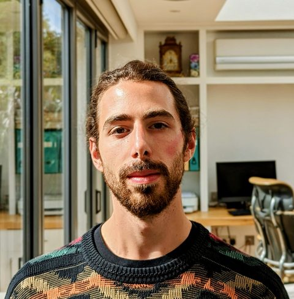
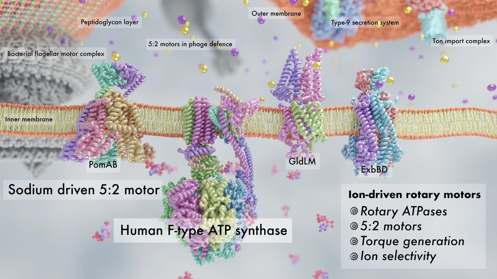
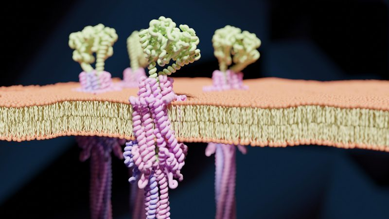
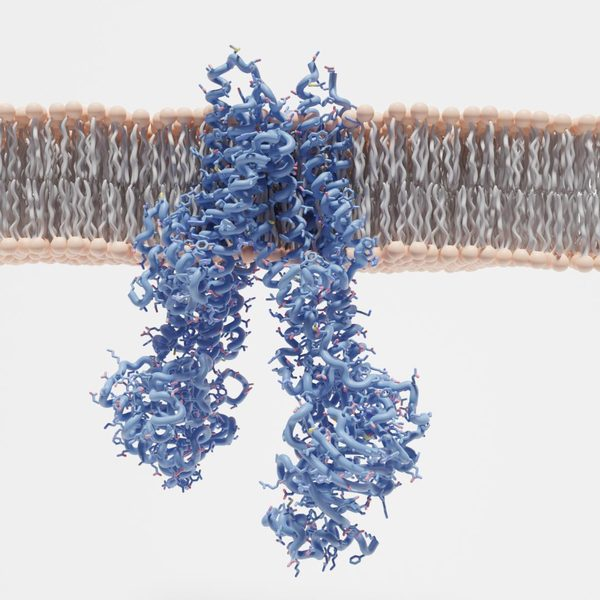

Above: a parametric four-helix coiled coil, the fold at the heart of my PhD. Drag it to rotate.
I combine AI design tools with a physical understanding of atomic interactions to make new proteins and better molecules. My path ran from small-molecule drug discovery at GSK, through the sequence-to-structure rules of α-helical coiled coils, to de novo binders and molecular machines in Copenhagen, and now free energy methods for drug discovery at Schrödinger.
I also make scientific illustrations in Blender and ChimeraX, trying to capture the function and beauty of biological macromolecules.
Biologics All Access Applications Scientist since September 2025. I apply free energy calculations and physics-based modelling to lead optimisation, run projects in LiveDesign, and present the science at workshops and conferences.



Free energy methods, LiveDesign and lead optimisation for drug discovery; workshops and conference presentations.
Prepared manuscripts from PhD projects, including internal and international collaborations.
Market research and strategy for a start-up company.
Developed and validated GLP methods to measure drugs and metabolites in biological matrices.
From Google Scholar, September 2026. Papers before 2026 are under F. J. O. Martin.
With team AmigoAcids, designed binders against CD20 for a pooled CAR-T screen. A uniform validation pipeline across many AI design tools gave a 6% hit rate (11 of 187) and second place overall. I taught design methods to the team and helped lead a remote, international group. Code on GitHub.
Renders and graphical abstracts in Blender and ChimeraX. Get in touch to commission or collaborate on a piece.
Mentoring students from under-represented backgrounds into biology and chemistry.
Ran and hosted Pint of Science Copenhagen.
Languages: English (native), French and Italian (limited working proficiency).